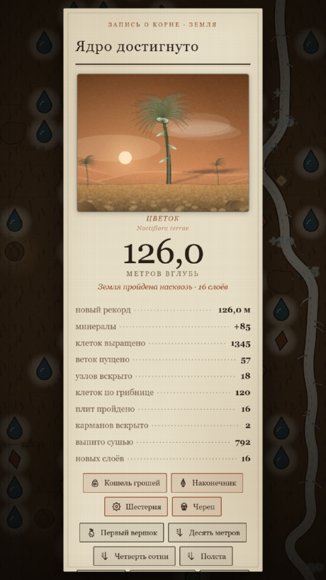

Вы ведёте корень пальцем вниз, слой за слоем. Каждая клетка стоит воды, и чем глубже, тем плотнее грунт. Жила воды продлит спуск, камень заставит искать обход, плита не пустит вовсе. Задача одна: дойти до ядра мира прежде, чем корень высохнет.
Скачать в RuStore
Google Play и App Store — позже




Что внутри
- Семьдесят миров — от Земли и Луны до Эриды и Проксимы. У каждого свои слои, своя порода и своё растение, которое распускается наверху, когда ядро достигнуто.
- 248 находок: монеты, кости, лампы рудокопов — у каждой своя история в дневнике.
- Гербарий — растение каждого пройденного мира, с названием на латыни.
- Прокачка семени — не список покупок, а растущий корень.
- Земля дня — один мир, одинаковый для всех, каждые сутки новый.
- Пять языков: русский, английский, испанский, немецкий, португальский.
Без условий
Игра работает без интернета и не просит регистрации. Прогресс хранится только на вашем устройстве: учётных записей нет, данные никуда не уходят. Единственное, что выходит наружу, — запросы рекламной сети.
Подробно об этом — в политике конфиденциальности.
Вопросы, находки и пожелания: bobrov.dev8@gmail.com